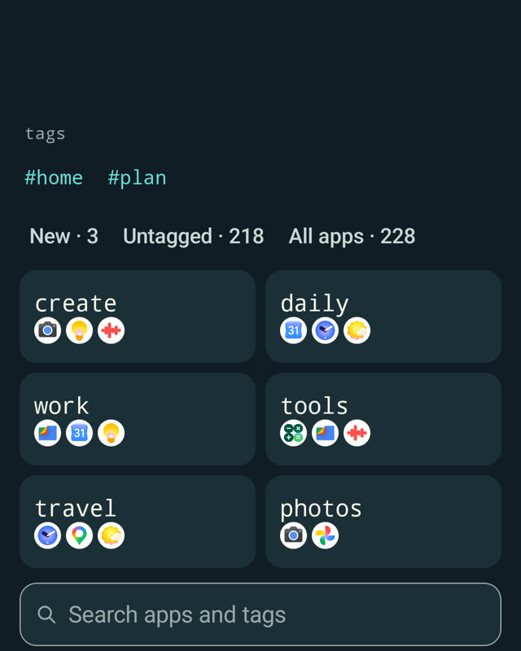

Radial
Drag from where your thumb rests. Each direction holds an app, an action like the flashlight, or a tag whose apps unfold into a second ring.
Press where your thumb already is, drag toward a direction, let go. Learn a direction once and your thumb just goes there, the way your fingers know a keyboard shortcut.
Keyboard-driven desktop. Thumb-driven phone.
Press where your thumb rests
Home stays quiet: a clock, your wallpaper and two words. Everything else is one movement away.
Drag from where your thumb rests. Each direction holds an app, an action like the flashlight, or a tag whose apps unfold into a second ring.
For everything you haven't learned yet. Apps, contacts, actions and app shortcuts, ranked as you type. Prefix # to search inside a tag.

A predictable list of everything installed, with local, overlapping tags. A tag can live in the list, in Search and on the radial at the same time.
Omarchy made the desktop fast by trusting muscle memory: no hunting for icons, just a hotkey your fingers already know. Flyt brings that idea to the one device you use with one hand.
Paste the GitHub link of any Omarchy theme and Flyt inspects, previews and installs its palette and backgrounds. Only when you ask; nothing runs in the background.
github.com/you/omarchy-your-themeMake a theme on the phone from your own photos, then share it as a standard Omarchy theme folder. Drop it in your themes folder, or push it to Git and install it like any other.
omarchy theme install https://github.com/you/your-themeFast by default. Quiet when idle. Nothing between intent and action. You don't need Omarchy to use Flyt, but if you use it, you'll feel at home.
Flyt is an independent project and is not affiliated with or endorsed by Omarchy or its authors. Bundled palettes come from MIT-licensed themes; see the theme notice.
Flyt ships with two themes of its own: Blåtime, four Nordic blue-hour scenes with a single warm light, and Krets. Plus a handful of beloved palettes, each with a ground drawn from its colours. Or build a theme from up to four of your own photos.
Coming from Omarchy? Paste your theme's GitHub link in Flyt and it arrives with its own wallpapers.
Go on, tap one. That is exactly what happens on your Home screen.
Mirror the directions for your left hand with one switch.
The radial opens where your thumb lands. The direction is what you learn, not a spot on the glass.
Half or full circle, how many directions, how far to drag. Tuned to your thumb's reach.
Guidance shrinks once a direction is familiar, so the screen stays calm.
No account. No ads. No analytics. Your settings and what Flyt learns stay on your phone.
Flyt only goes online when you ask it to fetch a theme from GitHub. The source is open under the GPL, so you can check.
Both are the official app, signed with the same key, so you can switch between them without losing your setup.
NOK 59 once, or the local equivalent
Free forever
Signing certificate SHA-256
02:18:7F:EB:E5:09:58:A7:AF:E8:97:7F:E9:BB:75:8D:95:E4:19:32:C4:2C:6D:EE:85:7D:32:FB:C9:61:BF:B9